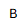
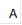
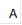

duct’air
version 4.x
Document
créé le : 17/12/2024
Modifié
le : 15/01/2025 21:05:31
Orientation des coudes
Qu’est
qu’un coude « à chant » ou « à plat » ?
La
question est souvent posée.
Parfois on
parle aussi de coude « montant » ou « tournant », qui n’a
pas réellement de sens. Cela dépend de l’origine que l’on prend.
Ci-dessous,
voici quelques exemples de coudes sur des réseaux types.



 



Vue
en plan
Visuellement,
vue de dessus, les coudes 1 et 3 sont identiques. La largeur, que nous allons
appeler A, est identique soit 500 mm.
Mais la
hauteur, que nous allons appeler B, est différente. Pour le coude 1, B =
300 et pour le coude 3, B = 800
Le
coude 1 est un coude
à plat et le coude 2 est un coude à chant.
Pourquoi ?
·
Quand la largeur
est supérieure à la hauteur (500 > 300), il s’agit un coude à
plat
·
Quand la largeur
est inférieure à la hauteur (500 < 800), il s’agit un coude à
chant
Vue
coupe A-A
Visuellement,
vue en coupe, les coudes 2 et 4 sont des coudes montants. Mais l’un est à chant
et l’autre est plat.
Pour le
coude 2 :
La
largeur, que nous avons précédemment appeler A, devient la hauteur de la
pièce. A est égal à 500.
La
hauteur, que nous avons précédemment appeler B devient la largeur de la
pièce. B est égal 300.
Si on
reprend la même logique que pour la vue en plan, la largeur de la pièce
est inférieure à la hauteur donc le coude 2 est à chant.
Pour le
coude 4 :
La hauteur
se retrouve dans la largeur (800). Et la largeur devient la hauteur (300).
La
largeur (800) est supérieure à la hauteur (300), le coude 4 est à plat.
En
résumé :
Afin de
mémoriser la différence, vous pouvez référer aux images ci-dessous :
·
Sur un coude à plat,
vous pouvez monter sur vos deux pieds
·
Sur un coude à chant,
vous pouvez qu’un seul pied au risque de tomber !
|
|
|||
|
|
|||